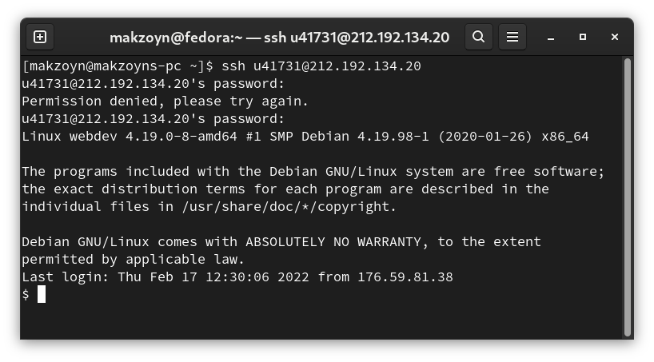
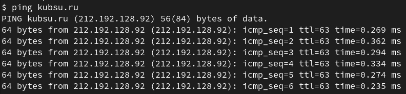
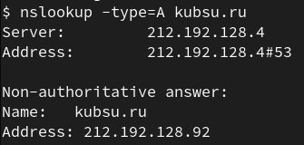
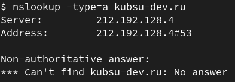
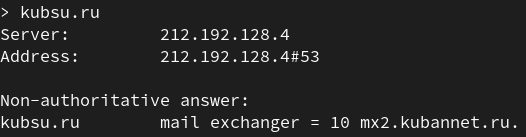
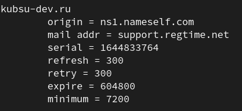
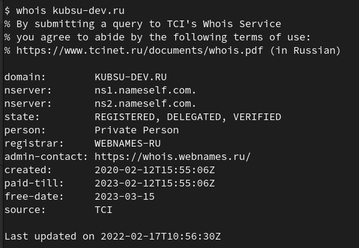
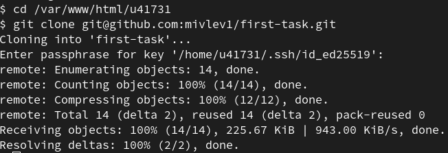
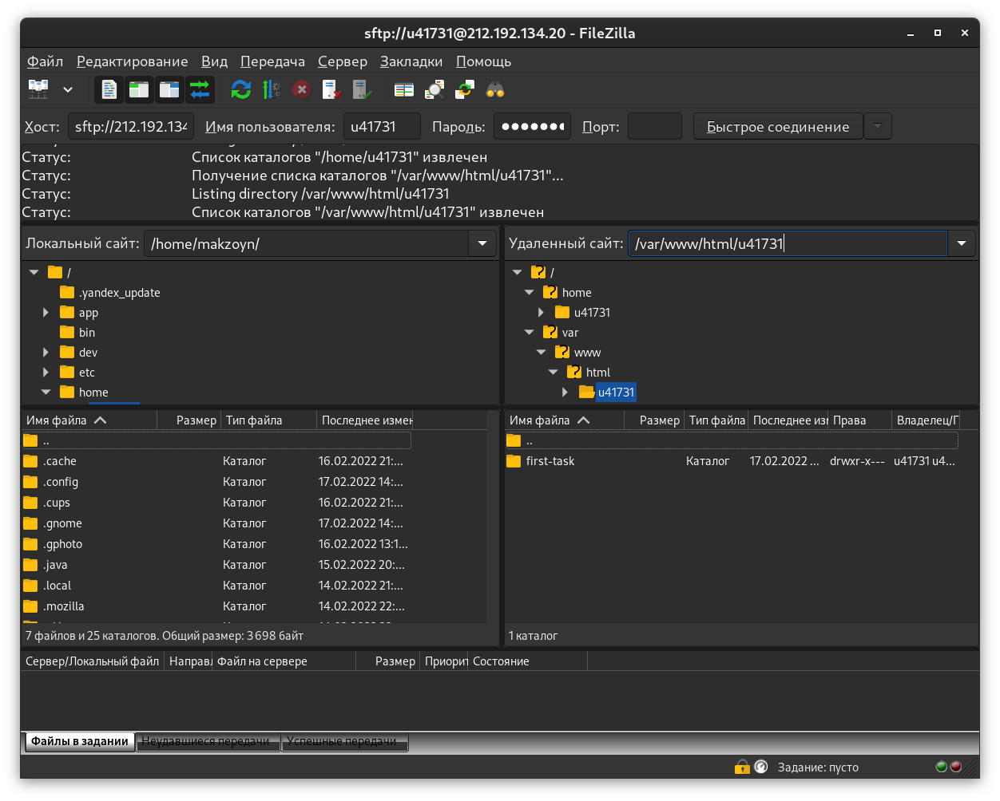

При помощи команды "ssh u41731@212.192.134.20" было произведено подключение к выделеному серверу
c помощью ssh команды ping была произведена проверка подключения к серверу kubsu.ru с выделенного сервера
с помощью ssh команды nslookup -type=A узнаем подробные сведения о действующем соединении
 с помощью ssh команды nslookup -type=MX узнаем основную DNS запись для электронной почты
 с помощью ssh команды whois узнаем информацию о том, кто владеет доменом
с помощь команды на скриншоте репозиторий был склонирован на удаленный сервер kubsu-dev
подключение к учебному серверу с помощью FTP клиента
скриншот gitclone и filezilla были загружены на учебный сервер с помощью Filezilla